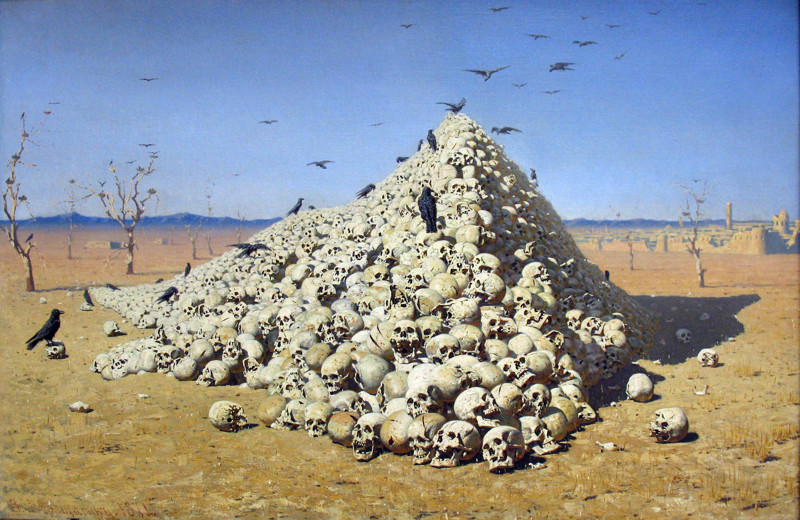

Syllabus

Instructor
- Professor Juan Tellez
- 583 Kerr Hall
- jftellez@ucdavis.edu
- OH: W 9:45am-11:45am
Teaching assistants
- Forrest Owens
OH: Tu 9am-10am
Kerr 568
flowens@ucdavis.edu - Alexandra (Ally) Lazar
OH: Tu 2pm-3pm
Kerr 575
ajlazar@ucdavis.edu - Joseph Bonneau
OH: M 11am-1pm
Kerr 677
jibonneau@ucdavis.edu
Course details
- Mon/Wed
- 9/25–12/06
- 1:40PM - 3:00PM
- The Grove (Surge III) 1309
What is this class about?
This is a course on the study of civil wars, political violence, and other forms of armed conflict. Each week is organized around a topic related to the study of political violence, including why civil wars break out, the tactics insurgents and states use during wars and other big questions in the literature.
In addition to reading, we will also spend a significant amount of time in this class working with data on political violence. We will explore general patterns and trends, think about how to measure different concepts related to political violence, and see to what extent different theories of political violence are supported by evidence.
By the end of this course, you will be able to:
- Identify structural and historical drivers of violence
- Think about civil war as a strategic process involving states, civilians, and armed groups
- Explore, analyze, and interpret data bearing on political violence
Course content may include discussions and materials related to war, terrorism, genocide, torture, and other forms of violence. We will engage with scholarly texts, videos, images, and case studies that may contain graphic descriptions or sensitive content. These materials are necessary for a comprehensive understanding of the subject, but may be emotionally challenging.
What materials do I need for this course?
Where do I find the readings?
Book chapters and other non-easily accessible readings will be linked on this site. You will have to find journal articles and easily accessible readings on your own (a valuable skill!). Googling the article is often enough, otherwise Google Scholar and being either on campus wi-fi or on the library VPN should do the trick. If you’re stuck the TAs will be happy to help.
What do I need for the data assignments?
All homework requiring data will be done in Google Sheets or Excel. Google Sheets is free to use with a Google account, and I will do all data analysis tutorials in Google Sheets. However, you can easily follow along with whatever program you prefer.
The class assumes no prior experience working with data
How can I get help or contact the instructors?
For big questions – stuck on the homework, question about a grade, confusion/questions about the reading – the best thing is to come to our office hours. You will get better help from us during office hours than over email.
For small and/or urgent questions – my grade is missing, you believe there is an error in something we uploaded, etc. – the best thing is to email. In your emails, please:
- Be professional (include a subject line, a greeting, e.g., “Dear Prof. XYZ,”)
- Be brief (I won’t be offended!)
Frequently Answered No Questions (FANQ)
This is an important list of questions that students frequently ask where the answer is ‘no’.
Do you record lecture? I do not record lecture.
Can I record your lecture? You may not record my lecture.
I had to miss class, do I need to let you know? You do not need to let me know.
Can I have your lecture notes in addition to your slides? You may not have any additional notes.
Will there be a study guide? There will not be a study guide. Making one is a great study exercise!
Are there extra practice tests / practice questions? There are no extra practice tests / questions.
Can I correct what I got wrong on the homework / test and resubmit for credit? You may not resubmit homework / test for credit.
Can I take the exam earlier / later than scheduled? You may not take exams earlier / later than scheduled.
It is week X, can I turn in a missing assignment from week X - N? You may not turn in an assignment from previous weeks. See the assignments page for more details.
The homework was due Wednesday, but when I went to turn it in that evening, something happened that was out of my control and I couldn’t turn it in. Can I turn it in now without missing points? You may not turn it in now without missing points. See the assignments page for more details.
Will there be extra credit? There may be, but I will not pre-commit to extra credit opportunities.
Counseling & Psychiatry Services
Life at Davis can be complicated and challenging. You might feel overwhelmed, experience anxiety or depression, or struggle with relationships or family responsibilities. UC Davis Counseling Services provide confidential support for students who are struggling with mental health and emotional challenges. Please do not hesitate to contact them for assistance—getting help is a smart and good thing to do.
Assignments and grades
You can find descriptions for all the assignments on the assignments page.
| Assignment | Percent |
|---|---|
| Problem sets (8) | 50% |
| Midterm | 25% |
| Final | 25% |
| Grade | Range | Grade | Range |
|---|---|---|---|
| A | 93–100% | C | 73–76% |
| A− | 90–92% | C− | 70–72% |
| B+ | 87–89% | D+ | 67–69% |
| B | 83–86% | D | 63–66% |
| B− | 80–82% | D− | 60–62% |
| C+ | 77–79% | F | < 60% |
The art of war
War is a common subject of art (like the painting up top). Look through some famous paintings of war. Draw a quick sketch of the painting of your choice on scratch paper, including your name and the name of the painting / art piece. Bring it to me in class. I’ll round your final grade up to the nearest whole number; you’ve got until the end of week 2 of class to do this.
Credits
This course draws on code, content, ideas and much more from work by Andrew Heiss, Kieran Healy, Laia Balcells, and others who have made their courses publicly available.